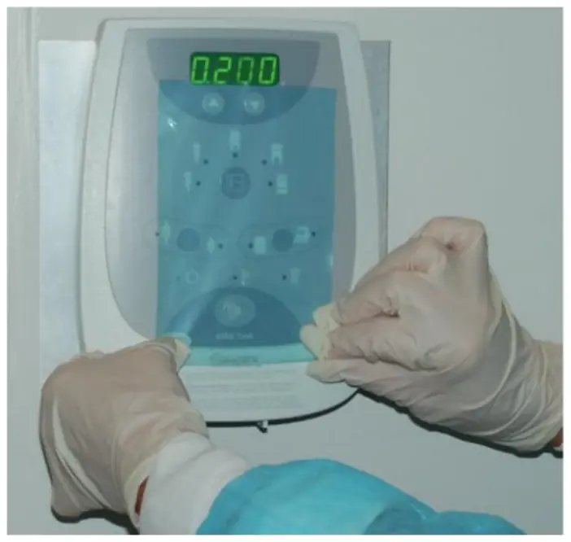
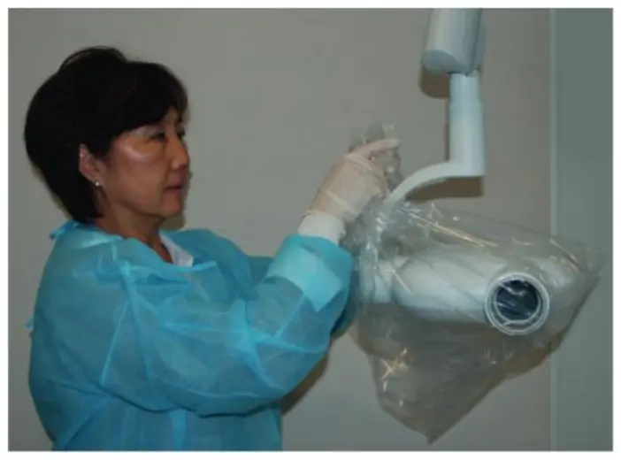

نسخه استخراجشده؛ ترجمه یا تأیید علمی انجام نشده است. وضعیت: captured
هدف کنترل عفونت در رادیولوژی روشن است: «پیشگیری از آلودگی متقاطع و انتقال بیماری از بیمار به کارکنان، از کارکنان به بیمار، و از بیمار به بیمار.»

و کارکنان و بیماران دندانپزشکی در خطر افزایشیافتهی چه بیماریهاییاند؟ «سل، ویروسهای هرپس، عفونتهای دستگاه تنفسی فوقانی، و سویههای هپاتیت A تا E.»
و چرا رادیوگرافی بهطور ویژه پرخطر است؟ «توان آلودگی متقاطع در رادیوگرافی دندانی بزرگ است. در جریان گرفتن رادیوگرافی، دستهای اپراتور با تماس با دهان بیمار و گیرندهها و هولدرهای آلوده به بزاق آلوده میشوند. اپراتور همچنین باید هد لوله و تنظیمات پنل کنترل را برای پرتوگیری تنظیم کند.» و افزون بر آن: «آلودگی متقاطع ممکن است هنگام دست زدن به سنسورهای دیجیتال یا باز کردن پاکتهای فیلم در تاریکخانه هم رخ دهد.»
و یک الزام سازمانی: «هر مطب باید یک سیاست مکتوب توصیفکنندهی شیوههای کنترل عفونتش داشته باشد. بهتر است یک نفر در مطب، معمولاً دندانپزشک، مسئولیت اجرای این روشها را بپذیرد. این فرد دیگر اعضای مجموعه را هم آموزش میدهد.»
تعریفش: «شیوههای کنترل عفونت طراحیشده برای محافظت کارکنان بهداشتی و بیماران از پاتوژنهای منتقلشده با خون یا هر مایع، ترشح یا دفع بدن.»
و کِی اعمال میشوند؟ «وقتی مواجههای هست با: خون؛ هر مایع، ترشح و دفع بدن — بهجز عرق — صرفنظر از اینکه خون داشته باشند یا نه؛ پوست ناسالم؛ و غشاهای مخاطی.»
و فرض بنیادیشان: «زیر احتیاطهای استاندارد، همهی خون و بزاق انسانی چنان تلقی میشوند که گویی برای HIV و ویروس هپاتیت B عفونیاند. بر همین اساس، ابزارهای پیشگیری از آلودگی متقاطع برای همهی افراد به کار میروند.»
و چرا این فرض؟ «چون بسیاری از بیماران نمیدانند که ناقل بیماری عفونیاند یا انتخاب میکنند این اطلاعات را فاش نکنند.»
و مهمترین اقدام، سادهترین آن است: «بهداشت دست حیاتیترین اقدامی است که میتواند انتقال پاتوژنهای بیماری در محیطهای بهداشتی را کاهش دهد.»
تعریف «سطح تماس بالینی»: «سطوحی که ممکن است با دستهای دستکشپوش یا ابزارهایی که به دهان میروند لمس شوند.»

و فهرستشان را بشناس: «دستگاه پرتو ایکس و پنل کنترل، رایانهی کنار صندلی، وسیلهی همراستاسازی پرتو، صندلی دندانپزشکی و پشتسری، پیشبند محافظ، کالر تیروئید، و سطوحی که گیرنده روی آنها گذاشته میشود.»
و ردهبندی CDC: «CDC اینها را اقلام غیربحرانی ردهبندی میکند» — یعنی «اجسامی که ممکن است با بزاق، خون یا پوست سالم تماس یابند، ولی نه با غشاهای مخاطی دهان».
و راهبرد دوگانه: «هدف پیشگیری از آلودگی متقاطع با ضدعفونی همهی این سطوح و استفاده از سدها برای جدا کردن تجهیزات از تماس مستقیم برآورده میشود.»
و یک هشدار واقعبینانه که نباید نادیده گرفته شود: «هرچند سدها به کنترل عفونت کمک بزرگی میکنند، جای نیاز به تمیزکاری و ضدعفونی مؤثر سطح را نمیگیرند. تجربه نشان داده که شکست سدهای مکانیکی در فعالیت روزانهی درمان شایع است. هرگاه این رخ دهد، سطوحی که تصادفی در معرض قرار گرفتهاند باید تمیز و ضدعفونی شوند.»
| سطح فعالیت | ماده | غلظت |
|---|---|---|
| پایین | ترکیبات آمونیوم چهارتایی | — |
| پایین تا متوسط | ترکیبات فنولی | ۰٫۵ تا ۳ درصد |
| ترکیبات یدوفور | ۰٫۱ تا ۰٫۲ درصد | |
| متوسط | اتیل الکل، ایزوپروپیل الکل | ۷۰ درصد |
| هیپوکلریت سدیم | ۱۰۰۰ ppm — یعنی وایتکس خانگی ۵٫۲۵ تا ۶ درصد، رقیقشدهی ۱ به ۵۰ |
و تفاوت سطح متوسط و پایین را دقیق بشناس:
و یک ممنوعیت صریح: «ضدعفونیکنندههای سطح بالا برای استریلیزاسیون شیمیایی به کار میروند و هرگز نباید روی سطوح تماس بالینی استفاده شوند.»
و یک نکتهی زمانبندی مهم در پانورامیک: «رادیوگرافر باید حین وضعیتدهی و پرتوگیری بیمار دستکش یکبارمصرف بپوشد. دستکشها باید پیش از برداشتن کاست از دستگاه برای پردازش درآورده شوند، چون کاست و فیلم خارجدهانی میمانند و نباید با دستکش آلوده دست زده شوند.»
ردهبندی متفاوت: «ابزارهای نگهدارندهی گیرنده توسط CDC اقلام نیمهبحرانی ردهبندی میشوند» — یعنی «ابزارهایی که برای نفوذ به بافت نرم یا استخوان به کار نمیروند ولی با غشای مخاطی دهان تماس مییابند».
و روال کامل استریلیزاسیون: «بهتر است از ابزارهای نگهدارندهای استفاده شود که قابل استریل کردناند، ترجیحاً با بخار تحت فشار (اتوکلاو).» و گامبهگام: